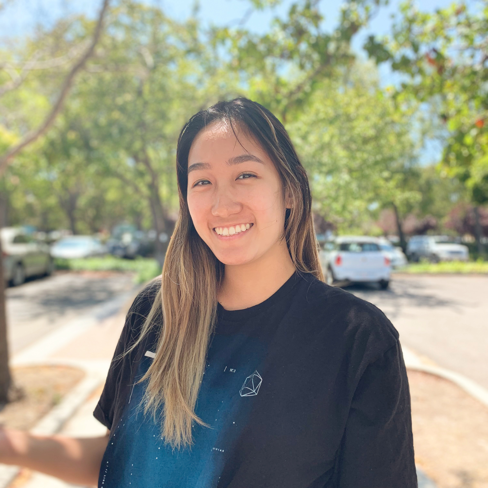

Hiya, I’m Rachel! I’m a senior at UC Berkeley, studying Cognitive Science
and minoring in Political Economy. CogSci and Polecon span a multitude of disciplines,
ranging from linguistics to neuroscience to political science, and that pretty
much sums up how I couldn't decide on just one thing to study.
My favorite takeaways from school have been about the big-picture systems and operations in which our society works, particularly in psychology and business. Thereafter, I found my path in human-centered design. Design has versatile applications, draws knowledge from every corner of the world, and aims to simplify the complexity of everyday life. As a designer and soon-to-be grad, I am excited to continue learning about different people from different spaces, meanwhile working towards solving some of their problems.
I also like browsing urbanist memes, collecting cool t-shirts and popping runny egg yolks. Beep me if you wanna reach me! rachel1lin@berkeley.edu 📬
she/her.
My favorite takeaways from school have been about the big-picture systems and operations in which our society works, particularly in psychology and business. Thereafter, I found my path in human-centered design. Design has versatile applications, draws knowledge from every corner of the world, and aims to simplify the complexity of everyday life. As a designer and soon-to-be grad, I am excited to continue learning about different people from different spaces, meanwhile working towards solving some of their problems.
I also like browsing urbanist memes, collecting cool t-shirts and popping runny egg yolks. Beep me if you wanna reach me! rachel1lin@berkeley.edu 📬
she/her.